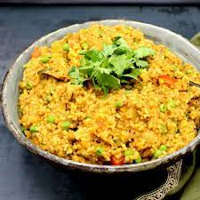

I am originally from Madduluru, Andhra Pradesh, India. I completed my schooling at Sri Sarada Bala Kuteer in Ongole, followed by my intermediate education at Sri Chaitanya Junior College. Subsequently, I earned my Bachelor of Computer Science degree from Kalasalingam Academy of Research and Education. Currently, I am pursuing a Master's degree in Computer Science at Northwest Missouri State University in Maryville, Missouri, USA
Khichdi is a healthy Indian dish made with rice and moong lentils. Various other ingredients like ghee (clarified butter), cumin seeds, ginger and asafoetida are optionally used depending on the preferences. This simple and humble dish is the first food for babies and people recovering from sickness
